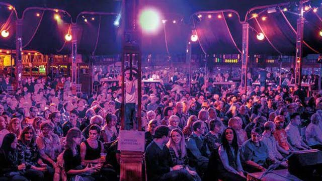

<
<

Manchester Jazz Festival is back this May with 10 days of live music 19-28 May from some of the best northern, national and international musicians operating in the world of contemporary jazz. First staged in the summer of 1996, MJF holds the crown of being Manchester's longest-running music festival. Year on year the festival brings massively diverese range of talent to the city, from big name artists to those-often unjustly-flying under the radar. While you may well know and love a number of artists on the line-up, part of the fun is the artists you dont know; mjf is also a place for discovery, for stumbling upon musical words you've never heard of. These musical worlds have never been so accessible- a good deal of the festival is free this year. In fact, the whole opening weekend is.
https://www.visitmanchester.com/whats-on/manchester-jazz-festival-2023-p745521